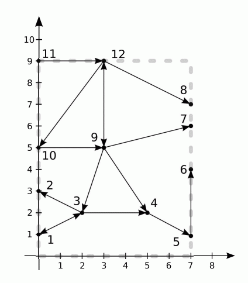

[Ceoi2011]Traffic
时间限制：40s 空间限制：128MB
题目描述

格丁尼亚的中心位于Kacza河中的一座岛屿。每天清晨，成千上万辆汽车通过岛屿从西岸的住宅区（由桥连接岛的西部）到东岸的工业区（由桥连接岛的东部）。
该岛类似于矩形，它的边平行于主方向。故可将它看作是笛卡尔坐标系中的一个A*B的矩形，它的对角分别为（0, 0）和（A, B）。
岛上有n个交通节点，编号为1…n（junction, 此处可理解为广义的路口），第i个节点坐标为(xi, yi)。如果一个节点的坐标为(0, y)，它就位于岛的西岸。类似的，坐标为(A, y)的节点位于岛的东岸。各个节点由街道连接，每条街道用线段连接两个节点。街道有单向行驶或双向行驶之分。除端点外任意两条街道都没有公共点。也没有桥梁或者隧道。
你不能对道路网络形状做任何其他假设。沿河岸的街道或节点可能没有入口或者出口街道。由于交通堵塞日趋严重，市长聘请你测试岛上当前的道路网是否足够。要求你写一个程序确定从岛的西岸的每个节点能够到达东岸的多少个节点。
输入格式
第1行包含4个整数n, m, A, B(1≤n≤300000, 0≤m≤900000,1≤A,B≤109)，分别表示格丁尼亚市中心的节点数，街道数和岛屿的尺寸。
接下来的n行，每行包含两个整数xi，yi (0≤xi≤A,0≤yi≤B)，表示第i个节点的坐标。任意两个节点的坐标都不相同。
再往下的m行表示街道，每条街道用3个整数ci, di, ki（1≤ci, di≤n, ci≠di, ki∈{1,2}），表示节点ci、di有街道连接，如果ki=1,表示从ci到di的街道是单向的，否则，这条街道可以双向行驶。每个无序对{ci, di}最多出现1次。
你可以假设西岸节点中至少有1个能够到达东岸的一些节点。
至少有30分的测试数据，n, m≤6000。
输出格式
为每个西岸节点输出1行，包括从这个节点出发能够到达东岸的节点数目
样例输入
12 13 7 9 0 1 0 3 2 2 5 2 7 1 7 4 7 6 7 7 3 5 0 5 0 9 3 9 1 3 2 3 2 1 3 4 1 4 5 1 5 6 1 9 3 1 9 4 1 9 7 1 9 12 2 10 9 1 11 12 1 12 8 1 12 10 1
样例输出
4
提示
题目来源
没有写明来源